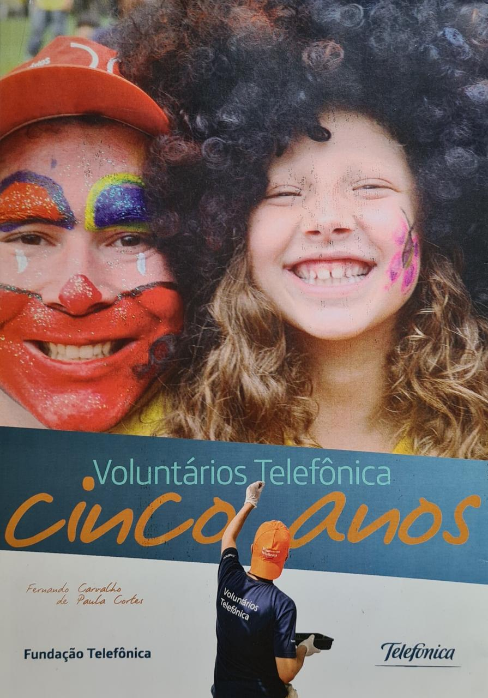

DeMolay
The DeMolay is a youth group sponsored and supported by Freemasonry since 1919. It was created in the United States of America by a Mason from Kansas City.
By epitomizing timeless values, and accepting the challenge of leadership - both of character and of action - the young men of DeMolay transform themselves into citizens of the highest caliber.
I have been part of the Order since I was 13 years old. There I organized and participated in food and clothing donation campaigns, charity dinners and distribution of basic food baskets.

Fundação Telefônica VIVO
Focusing on education as an essential pillar for the transformation of society, Fundação Telefônica VIVO contributes to the development and digital inclusion of students and educators through projects that stimulate new teaching and learning opportunities.
Volunteer Day is a global project that involves the employees of all the companies of the Telefónica Group. On this day, a project is chosen and its headquarters are renovated by the volunteers. During the renovation, the occupants of the headquarters join a second group for leisure activities.
Participation in Volunteer Day from 2008 to 2010.

In the photo I appear next to a child who participated in the project.

Minha Cena . org
MinhaCena.Org is a tool with social and educational impact that encourages improvement in writing and reading with the production of illustrations for essays by students from public and private schools and after-school NGOs with the support of volunteers.
In this project we are creating an online platform and I contribute by participating in the back-end team with other volunteers.